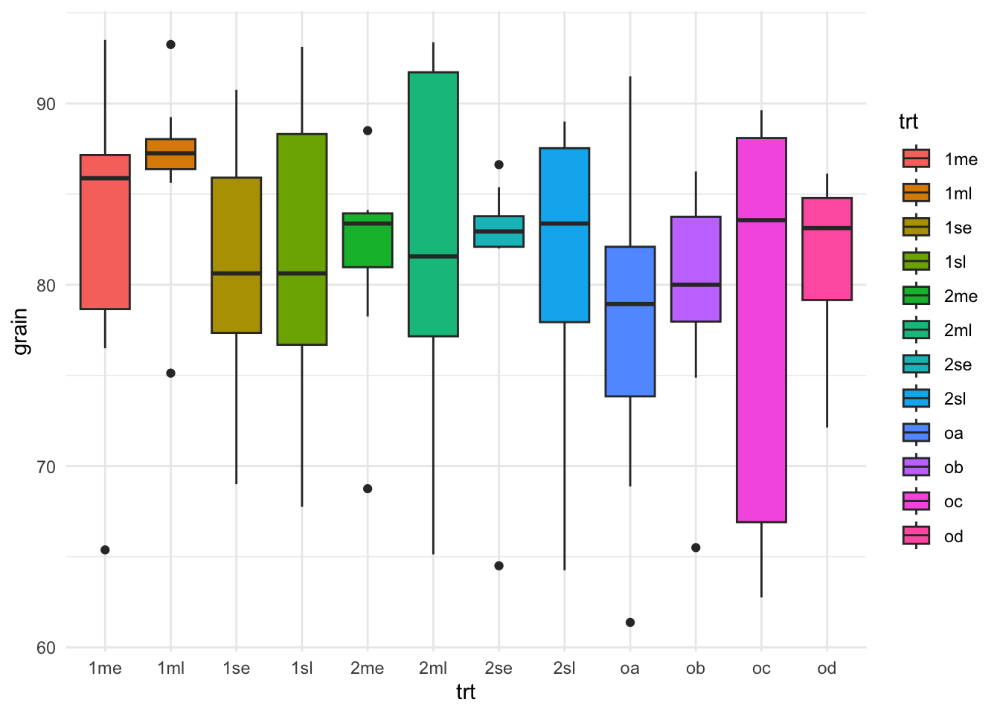

library(pacman)
pacman::p_load(dplyr, ggplot2)The pipe operator
Introduction
Most data analysis in R is a sequence of small steps: start with a dataset, then filter, transform, summarize, and visualize. You can write this as nested function calls or by creating many intermediate objects (df1, df2, df3), but both approaches can get messy: nested calls are hard to read from the inside out, and lots of intermediate objects add clutter.
A pipe operator lets you write code in the same order you think about the workflow: top-to-bottom, step-by-step. The output of one step becomes the input of the next. In practice, pipelines tend to be easier to read, easier to modify, and easier to debug because each step is explicit and you can inspect results at any point.
In the R ecosystem, there are two common pipes:
%>%from magrittr (widely used in tidyverse workflows)|>the native (base R) pipe (built into R 4.1.0 and later)
This short note shows both and highlights a few practical differences. Let’s navigate an example:
00. libraries
01. data
# Load the package
library(agridat)
# Load an example dataset
data(rothamsted.oats, package = 'agridat')
# Alternatively, you can load the dataset directly (cleaner)
rothamsted.oats <- agridat::rothamsted.oats
head(rothamsted.oats) block trt grain straw row col
1 x oa 61.375 83.0 12 1
2 x 2me 68.750 130.0 12 2
3 x 2sl 64.250 100.0 12 3
4 x ob 65.500 96.0 12 4
5 w 2sl 79.625 130.5 12 5
6 w oa 79.250 122.0 12 6The pipe operators
a. Pipe operator ‘%>%’:
The ‘dplyr’ package heavily utilizes the pipe operator %>% from the ‘magrittr’ package to streamline data manipulation workflows. This operator allows you to pass the output of one function directly into the next function, making your code more readable and easier to follow.
# Group by treatment and summarize
# Using the pipe operator for chaining commands
rothamsted.oats %>%
group_by(trt) %>%
summarize(mean_grain = mean(grain))# A tibble: 12 × 2
trt mean_grain
<fct> <dbl>
1 1me 82.8
2 1ml 86.5
3 1se 81.1
4 1sl 80.8
5 2me 81.5
6 2ml 82.3
7 2se 81.2
8 2sl 81.2
9 oa 77.6
10 ob 79.2
11 oc 78.4
12 od 81.4# The best practice is to specify the data using the .data argument
rothamsted.oats %>%
group_by(trt) %>%
summarize(.data = ., mean_grain = mean(grain))# A tibble: 12 × 2
trt mean_grain
<fct> <dbl>
1 1me 82.8
2 1ml 86.5
3 1se 81.1
4 1sl 80.8
5 2me 81.5
6 2ml 82.3
7 2se 81.2
8 2sl 81.2
9 oa 77.6
10 ob 79.2
11 oc 78.4
12 od 81.4# Let's make a plot
rothamsted.oats %>%
ggplot(aes(x = trt, y = grain)) +
geom_boxplot(aes(fill=trt)) +
theme_minimal()
b. Native pipe operator ‘|>’:
With the introduction of R 4.1.0, base R now includes its own native pipe operator |>, which serves a similar purpose to the %>% operator from the ‘magrittr’ package. This operator allows you to pass the result of one expression as the first argument to the next expression, enhancing code readability without the need for additional packages.
# Using the native pipe operator
rothamsted.oats |>
group_by(trt) |>
summarize(.data = _, mean_grain = mean(grain))# A tibble: 12 × 2
trt mean_grain
<fct> <dbl>
1 1me 82.8
2 1ml 86.5
3 1se 81.1
4 1sl 80.8
5 2me 81.5
6 2ml 82.3
7 2se 81.2
8 2sl 81.2
9 oa 77.6
10 ob 79.2
11 oc 78.4
12 od 81.4# Let's make a plot again
rothamsted.oats |>
ggplot(aes(x = trt, y = grain)) +
geom_boxplot(aes(fill=trt)) +
theme_minimal()
Warning
Notice when using the %>% the placeholder . is used to indicate where the piped value should be inserted if it’s not the first argument. Similarly, with the native pipe |>, the placeholder _ can be used to indicate where the piped value should be inserted if it’s not the first argument.
Does any work “better” than the other?
Where |> tends to be better
- No package needed (it’s base R syntax), so it works everywhere without loading magrittr.
- Usually less overhead than %>% because %>% is a function-based pipe, while |> is language syntax.
- In practice, the difference is rarely noticeable compared to the cost of dplyr verbs, but it can matter in tight loops.
- Plays nicely with modern R style and is increasingly common in new code.
Where %>% is more flexible
- Placeholder power: %>% uses . to place the LHS wherever you want. Base |> uses _ but it’s more restricted (notably, it’s tied to named arguments).
%>%can do extras like creating functions from a pipeline (and other magrittr variants like%T>%,%<>%, etc.). Base|>doesn’t include those.%>%lets you pipe into a bare function name (x %>% sqrt).- Base
|>generally requires a call: x |> sqrt()